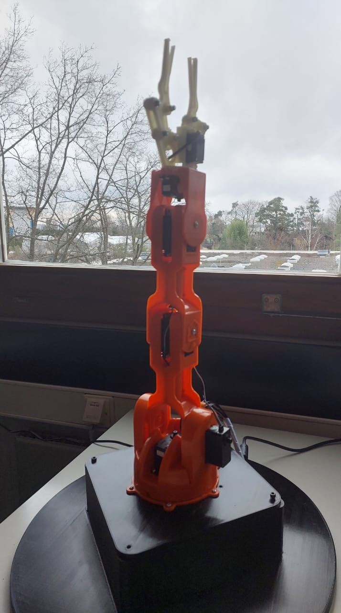

Projects

Bin Pick Lab Project
Developed skill-based robot control integrating MATLAB, Simulink, Arduino, and Semscape simulation. Deployed on a real industrial robotic arm.
- Skills: Robotic Motion Planning, MATLAB, Simulink, Image Detection and Vision
- Key Responsibilities: Designed motion algorithms, Modeled robot in Simulink, Integrated hardware communication
- Achievements: Improved object picking precision with control parameter optimization

Bachelor Project: Energy Optimization
Created a real-time energy monitoring and optimization system using CODESYS and Automation Server. Real-time visualization integrated with Modbus TCP communication. I applied the Idea on two System : a water Distribution and a Smart Grid Systems
- Skills: CODESYS,HMI and Visualization, Automation Server, Modbus TCP, Real-Time Data Acquisition
- Key Responsibilities: Programmed PLCs for energy monitoring & Water Distribution, Created live dashboards for Fault Monitering, Integrated sensors via Modbus
- Achievements: Achieved energy savings and optimal water usage on a prototype model environment